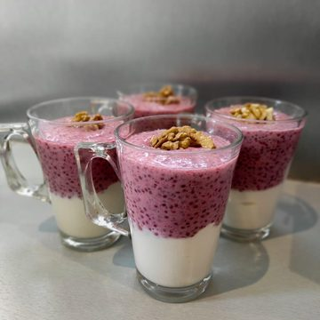
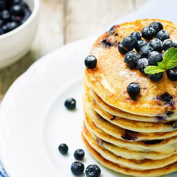
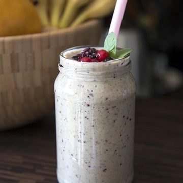
 Recipe e-book · 39 recipes
Recipe e-book · 39 recipes
Breakfasts
to ignite
your potential
Recipes for energy, recovery and performance
Marine Lenehan · Sports Nutritionist
Inside this bookContents
- —Build a balanced breakfastThe four food groups, protein at breakfast and how to read the recipes3
- —A word on the authorMarine, sports nutritionist4
- 01Chia seed puddings3 recipes5
- 02Overnight oats5 recipes9
- 03Porridge & warm grains6 recipes15
- 04Granola & breakfast bowls3 recipes22
- 05Pancakes & French toast6 recipes26
- 06Toasts, breads & spreads5 recipes33
- 07Eggs & savoury breakfasts6 recipes39
- 08Smoothies & smoothie bowls5 recipes46
- —A final note on fuellingReal food, flexible portions52
Before you startBuild a balanced breakfast
A useful breakfast combines foods that support your training and help you meet your overall nutritional needs. Think in terms of four groups:
Protein-rich foods
Eggs, Greek yogurt, skyr, cottage cheese, milk, tofu and fish.
Carbohydrate foods
Oats, wholegrain bread, fruit, quinoa, potatoes and cereals.
Fruit & vegetables
Berries, banana, apples, spinach, tomatoes and peppers.
Healthy fats
Nuts, seeds, olive oil, nut butter and avocado.
Protein at breakfast
Including a protein-rich food at breakfast is one practical way to distribute protein across the day. A broad target of around 25–40 g at a main meal can be useful for many athletes, but needs vary with body size, training load, total daily intake and individual goals. Not every breakfast needs to hit the same number.
You can build a protein-containing breakfast without supplements: combine dairy foods, eggs, fish or tofu with oats, bread, fruit and other toppings. If a breakfast is naturally lower in protein, add a side of yogurt, milk or eggs rather than forcing every recipe to be a high-protein meal.
Training soon?If you have 1.5–3 hours before training, choose a breakfast that provides carbohydrate and sits comfortably. If you have only 30–60 minutes, a smaller, easier-to-digest option may work better. Reduce fibre and fat close to exercise if they cause gastrointestinal discomfort. Match portion size to the session and your own tolerance.
How to read the recipes
420kcal
28 gprotein
44 gcarbs
14 gfat
- Recipes use everyday ingredients and no protein powder. Use the stated portions as a starting point and adjust quantities to appetite and training demands.
- Every recipe shows calories, protein, carbs and fat per serving, calculated from the ingredient quantities listed.
- Where a range is given, values use the midpoint. Optional items and toppings without a quantity are not counted.
- Values are estimates based on typical ingredient data. Brands differ, so check labels and weigh ingredients for the most accurate numbers.
Meet your nutritionistA word on the author
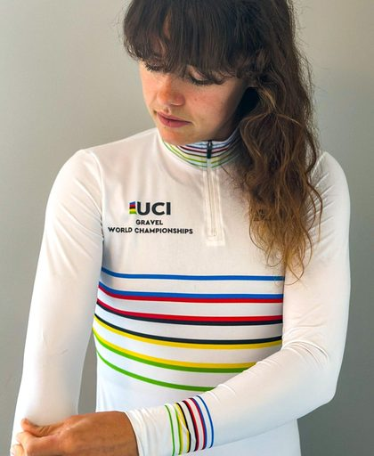
Marine is an experienced sports nutritionist who brings you these breakfast recipes to ignite your potential.
The recommendations for living a healthy life sound simple: eat well, be regularly active, get proper sleep and practise self-care. But you probably know it is easier said than done, and life can get in the way.
With Marine’s healthy recipes you will feel full and ready to start your day with joy and energy.
Enjoy!
Healthy habits to ignite your potential
Vivify Sports helps cyclists, triathletes and active people fuel their training with real food: personalised nutrition coaching in English, French and Italian, online and in Ireland.
vivifysports.com
01
Chapter 01Chia seed puddings
Fibre, plant omega-3 and make-ahead convenience
Chia seeds absorb liquid and thicken as they rest. Prepare these puddings the night before, then add yogurt and toppings in the morning.
In this chapter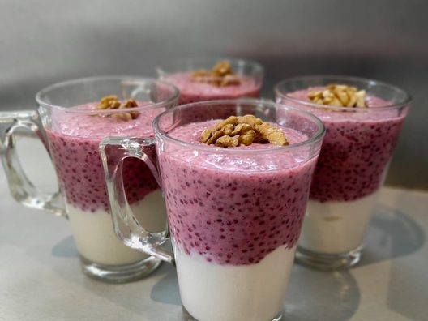
Raspberry Chia Seed Pudding330 kcal · 17 g protein6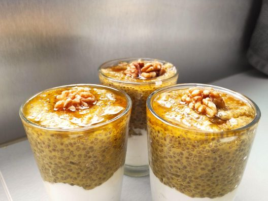
Mango Chia Seed Pudding310 kcal · 17 g protein7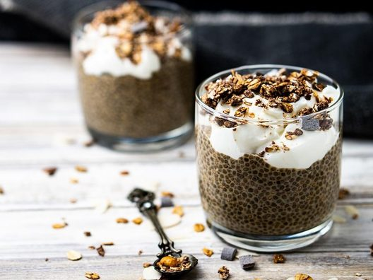
Banana & Cinnamon Chia Pudding305 kcal · 17 g protein8
Chia seed puddingsRaspberry Chia Seed Pudding
Serves 2 · values per serving
330kcal
17 gprotein
25 gcarbs
18 gfat
Ingredients
- 125 g raspberries, fresh or frozen
- 160 ml milk of choice
- 1 tsp maple syrup
- 24 g chia seeds
- 200 g thick Greek yogurt or skyr
- 30 g walnuts or granola
Method
- Blend the raspberries with the milk and maple syrup until smooth.
- Stir in the chia seeds and divide between two jars.
- Refrigerate for at least 2 hours, preferably overnight.
- Serve over the Greek yogurt or skyr and finish with walnuts or granola.
Vivify tipFor a higher-protein version, use thick Greek yogurt or skyr rather than coconut yogurt.
Chia seed puddingsMango Chia Seed Pudding
Serves 2 · values per serving
310kcal
17 gprotein
37 gcarbs
10 gfat
Ingredients
- 200 g mango flesh
- 160 ml milk of choice
- 24 g chia seeds
- 200 g Greek yogurt or skyr
- 30 g granola or chopped nuts
- Squeeze of lime, optional
Method
- Blend the mango and milk until smooth.
- Stir in the chia seeds and a squeeze of lime, if using.
- Divide between two jars and chill for at least 2 hours.
- Layer over Greek yogurt or skyr and top with granola or nuts.
Vivify tipCoconut yogurt can be used for flavour, but it generally contributes less protein than dairy Greek yogurt or skyr.
Not counted in the macros: squeeze of lime, optional.
Chia seed puddingsBanana & Cinnamon Chia Pudding
Serves 2 · values per serving
305kcal
17 gprotein
36 gcarbs
10 gfat
Ingredients
- 1 ripe banana (about 120 g)
- 160 ml milk
- 24 g chia seeds
- 200 g natural Greek yogurt
- ½ tsp cinnamon
- 30 g granola or chopped nuts
Method
- Blend the banana, milk and cinnamon.
- Stir in the chia seeds and divide between two jars.
- Refrigerate for at least 2 hours, preferably overnight.
- Serve with Greek yogurt and granola or nuts.
02
Chapter 02Overnight oats
No cooking, endless variations
Overnight oats are an easy way to combine carbohydrate-rich oats with dairy, fruit, seeds and nuts. Mix the base in a jar and refrigerate overnight.
In this chapter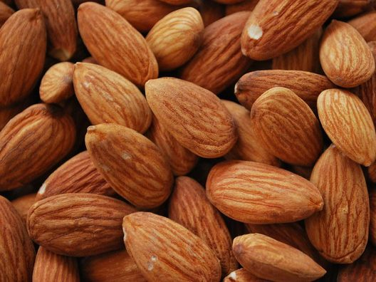
Almond & Banana Overnight Oats510 kcal · 27 g protein10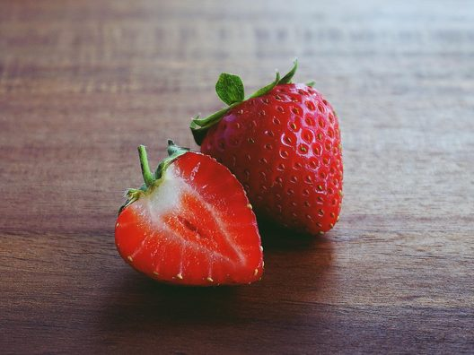
Strawberry & Cream Overnight Oats395 kcal · 25 g protein11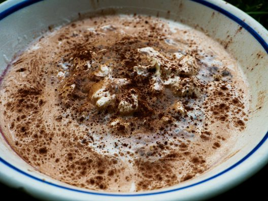
Tiramisu Overnight Oats435 kcal · 26 g protein12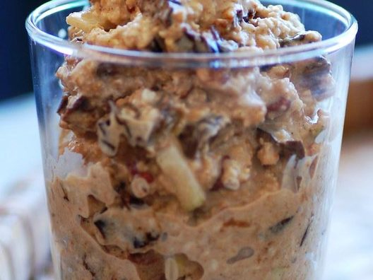
Chocolate, Peanut Butter & Banana Oats555 kcal · 30 g protein13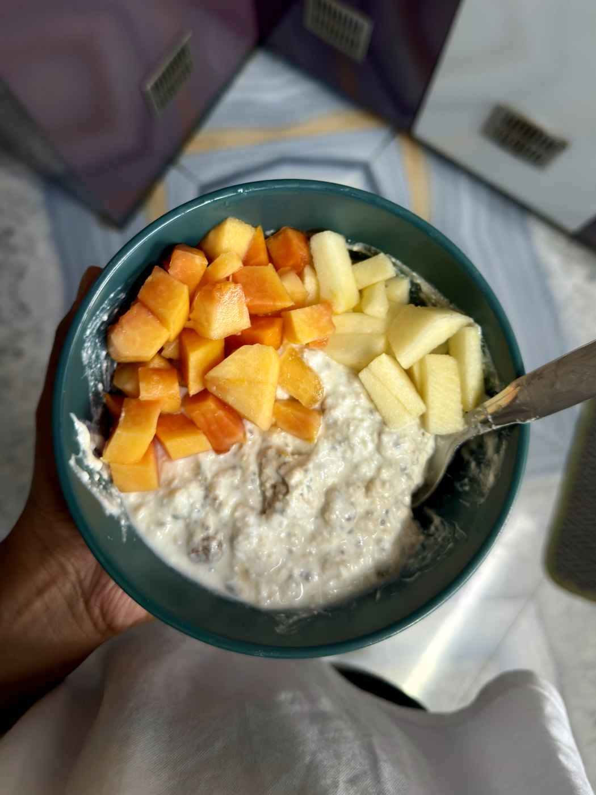
Apple Pie Overnight Oats510 kcal · 26 g protein14
Overnight oatsAlmond & Banana Overnight Oats
Serves 1 · values per serving
510kcal
27 gprotein
62 gcarbs
17 gfat
Ingredients
- 40 g rolled oats
- 150 g thick Greek yogurt or skyr
- 80–100 ml milk
- 1 tbsp chia seeds (about 12 g)
- ½ tsp almond extract
- 1 tsp honey or maple syrup
- ½ banana, sliced
- 10 g chopped almonds
Method
- Mix the oats, yogurt, milk, chia seeds, almond extract and honey in a jar.
- Cover and refrigerate overnight.
- Loosen with a splash of milk if needed.
- Top with banana and almonds before serving.
Vivify tipUse a thick yogurt and adjust the milk to get the texture you prefer.
Overnight oatsStrawberry & Cream Overnight Oats
Serves 1 · values per serving
395kcal
25 gprotein
47 gcarbs
12 gfat
Ingredients
- 40 g rolled oats
- 150 g Greek yogurt or skyr
- 80 ml milk
- 1 tbsp chia seeds
- ½ tsp vanilla extract
- 100 g strawberries, chopped
Method
- Combine the oats, yogurt, milk, chia seeds and vanilla.
- Fold through half the strawberries.
- Cover and refrigerate overnight.
- Top with the remaining strawberries.
Tiramisu Overnight Oats
Serves 1 · values per serving
435kcal
26 gprotein
42 gcarbs
18 gfat
Ingredients
- 40 g rolled oats
- 150 g Greek yogurt or skyr
- 60–80 ml milk
- 1 tbsp chia seeds
- 1 cooled espresso shot
- 1 tsp cocoa powder
- 10 g chopped hazelnuts or almonds
- ½ tsp maple syrup, optional
Method
- Mix the oats, yogurt, milk, chia seeds, espresso and maple syrup.
- Cover and refrigerate overnight.
- Dust with cocoa and finish with chopped nuts.
Vivify tipChoose decaffeinated coffee if you prefer to limit caffeine.
Not counted in the macros: ½ tsp maple syrup, optional.
Overnight oatsChocolate, Peanut Butter & Banana Oats
Serves 1 · values per serving
555kcal
30 gprotein
64 gcarbs
20 gfat
Ingredients
- 40 g rolled oats
- 150 g Greek yogurt or skyr
- 80 ml milk
- 1 tbsp chia seeds
- 1 tsp cocoa powder
- 1 tbsp peanut butter
- ½–1 banana, sliced
Method
- Stir together the oats, yogurt, milk, chia seeds and cocoa.
- Refrigerate overnight.
- Top with peanut butter and sliced banana.
Apple Pie Overnight Oats
Serves 1 · values per serving
510kcal
26 gprotein
60 gcarbs
18 gfat
Ingredients
- 40 g rolled oats
- 150 g Greek yogurt or skyr
- 80 ml milk
- 1 tbsp chia seeds
- 1 small apple, grated
- ½ tsp cinnamon
- 1 tsp maple syrup
- 10 g chopped walnuts
Method
- Combine the oats, yogurt, milk and chia seeds.
- Stir through the grated apple, cinnamon and maple syrup.
- Cover and refrigerate overnight.
- Top with walnuts before serving.
03
Chapter 03Porridge & warm grains
Oats, rice and quinoa: warm, filling and ready to fuel training
Porridge is easy to adapt to appetite and training demands. Stir yogurt through after cooking rather than boiling it, to keep the texture creamy.
In this chapter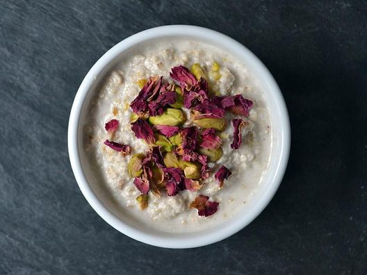
Creamy Greek Yogurt Porridge415 kcal · 24 g protein16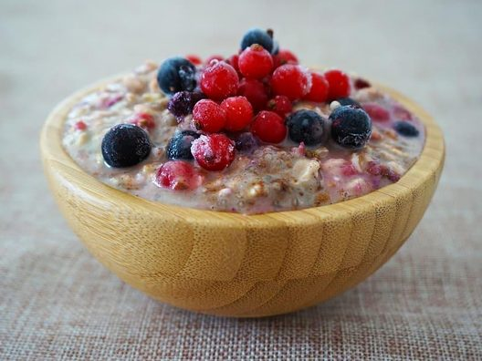
Berry & Nut Porridge495 kcal · 27 g protein17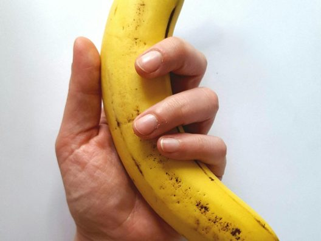
Baked Banana Porridge295 kcal · 12 g protein18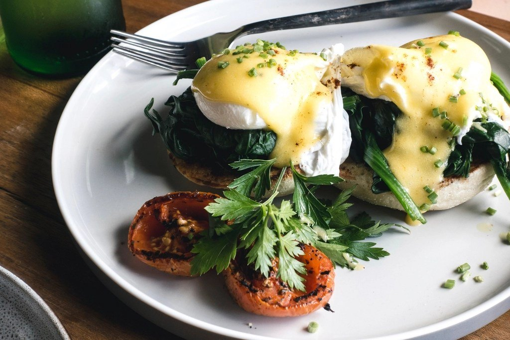
Savoury Spinach & Feta Oats385 kcal · 18 g protein19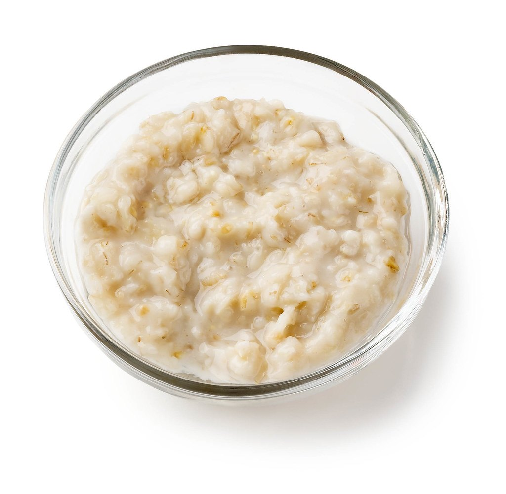
Creamy Cinnamon Rice Porridge460 kcal · 24 g protein20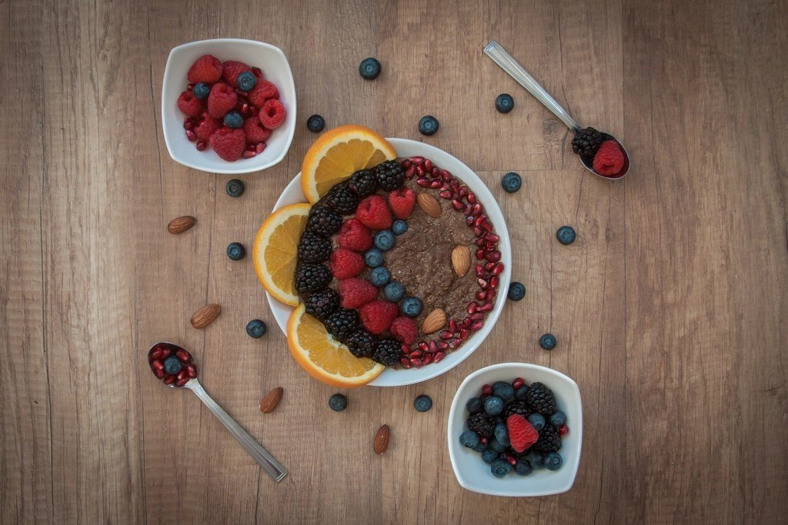
Warm Quinoa & Berry Bowl325 kcal · 17 g protein21
Porridge & warm grainsCreamy Greek Yogurt Porridge
Serves 1 · values per serving
415kcal
24 gprotein
59 gcarbs
10 gfat
Ingredients
- 50 g rolled oats
- 200 ml milk
- Pinch of salt
- 100 g thick Greek yogurt or skyr
- ½ banana or 80 g berries
- Cinnamon, optional
Method
- Add the oats, milk and salt to a saucepan.
- Cook gently for 4–6 minutes, stirring until creamy.
- Remove from the heat and allow to cool for a minute.
- Stir through the yogurt and top with fruit and cinnamon.
Vivify tipAdd extra milk or fruit when you need a larger carbohydrate serving.
Macros calculated with the banana option. Not counted in the macros: cinnamon, optional.
Porridge & warm grainsBerry & Nut Porridge
Serves 1 · values per serving
495kcal
27 gprotein
58 gcarbs
17 gfat
Ingredients
- 50 g rolled oats
- 200 ml milk
- 100 g mixed berries
- 15 g chopped nuts
- 100 g Greek yogurt or skyr
- 1 tsp honey, optional
Method
- Cook the oats with the milk over a medium-low heat until creamy.
- Warm the berries in a small pan or microwave.
- Spoon the porridge into a bowl and add the yogurt.
- Top with berries, nuts and honey.
Not counted in the macros: 1 tsp honey, optional.
Porridge & warm grainsBaked Banana Porridge
Serves 2 · values per serving
295kcal
12 gprotein
45 gcarbs
7 gfat
Ingredients
- 80 g rolled oats
- 1 ripe banana, mashed
- 1 egg
- 180 ml milk
- ½ tsp baking powder
- ½ tsp cinnamon
- Handful of berries
Method
- Heat the oven to 180°C and lightly grease a small baking dish.
- Mix the oats, mashed banana, egg, milk, baking powder and cinnamon.
- Fold through the berries and pour into the dish.
- Bake for 22–28 minutes until set and lightly golden.
- Serve warm with Greek yogurt or skyr.
The Greek yogurt or skyr served alongside is not counted in the macros.
Porridge & warm grainsSavoury Spinach & Feta Oats
Serves 1 · values per serving
385kcal
18 gprotein
34 gcarbs
20 gfat
Ingredients
- 50 g rolled oats
- 200 ml water or milk
- 1 egg
- 30 g feta, crumbled
- Handful of spinach
- Black pepper
- 1 tsp olive oil
Method
- Cook the oats with water or milk until creamy.
- Wilt the spinach in a small pan with the olive oil.
- Poach or fry the egg to your preference.
- Top the oats with spinach, feta and egg; season with black pepper.
Macros calculated with water.
Porridge & warm grainsCreamy Cinnamon Rice Porridge
Serves 1 · values per serving
460kcal
24 gprotein
72 gcarbs
8 gfat
Ingredients
- 50 g pudding rice (short-grain)
- 300 ml milk of choice, plus extra to adjust
- ½ tsp cinnamon
- 1 tsp honey or maple syrup
- 100 g Greek yogurt or skyr, to serve
- 80 g berries or ½ banana, to serve
- Pinch of salt
Method
- Add the pudding rice, milk, cinnamon and salt to a small saucepan.
- Bring to a gentle simmer, then cook over a low heat for 25–30 minutes, stirring often, until the rice is soft and creamy. Add a splash more milk if it gets too thick.
- Stir in the honey or maple syrup.
- Serve warm with Greek yogurt or skyr and fruit.
Vivify tipA gentle, versatile option for variety and easy-to-adjust carbohydrate. Pudding rice releases its starch as it cooks, which gives the creamy texture.
Macros calculated with the berries option.
Porridge & warm grainsWarm Quinoa & Berry Bowl
Serves 2 · values per bowl
325kcal
17 gprotein
42 gcarbs
10 gfat
Ingredients
- 200 g cooked quinoa
- 150 ml milk
- ½ tsp cinnamon
- 150 g Greek yogurt
- 120 g mixed berries
- 20 g flaked almonds
- 2 tsp honey
Method
- Warm the cooked quinoa with the milk and cinnamon in a saucepan for 3–4 minutes.
- Divide between two bowls.
- Top with yogurt, berries and almonds.
- Drizzle with honey.
04
Chapter 04Granola & breakfast bowls
Build a bowl around what you need
Granola adds crunch and energy. Pair it with yogurt, milk or skyr and fruit for a simple breakfast that can be adjusted to your appetite.
In this chapter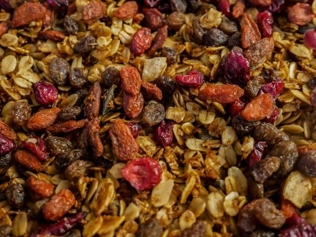
Crunchy Homemade Granola195 kcal · 5 g protein23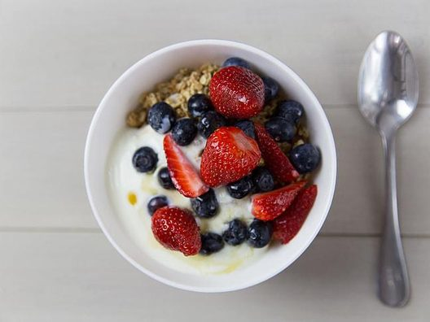
Berries, Granola & Honey Bowl390 kcal · 26 g protein24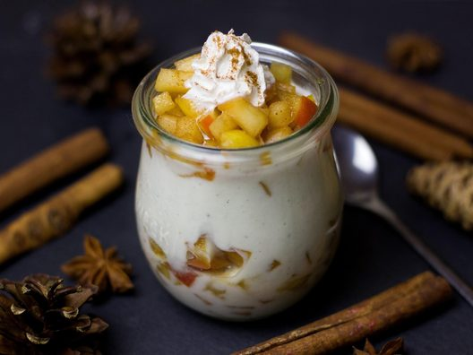
Tropical Yogurt Bowl445 kcal · 26 g protein25
Granola & breakfast bowlsCrunchy Homemade Granola
Makes about 20 portions · values per portion (about 40 g)
195kcal
5 gprotein
21 gcarbs
10 gfat
Ingredients
- 400 g rolled oats
- 120 g almonds, roughly chopped
- 60 g pumpkin seeds
- 1 tsp cinnamon
- Pinch of salt
- 90 g melted coconut oil or olive oil
- 100 g honey
- 1 tsp vanilla extract
- 75 g dried berries or raisins
Method
- Heat the oven to 160°C fan and line a large tray with baking paper.
- Mix the oats, almonds, seeds, cinnamon and salt.
- Stir together the oil, honey and vanilla, then mix through the dry ingredients.
- Spread on the tray and bake for 25–30 minutes, stirring once, until golden.
- Cool completely before stirring through the dried fruit. Store in an airtight container.
Vivify tipServe with Greek yogurt or skyr and fresh fruit. Granola is energy-dense, so choose a portion that suits your needs.
Granola & breakfast bowlsBerries, Granola & Honey Bowl
Serves 1 · values per bowl
390kcal
26 gprotein
46 gcarbs
12 gfat
Ingredients
- 200–250 g plain Greek yogurt or skyr
- 100 g mixed berries
- 30–40 g granola
- 1 tsp honey
Method
- Spoon the yogurt into a bowl.
- Top with berries and granola.
- Finish with honey.
Ranges are calculated at the midpoint.
Granola & breakfast bowlsTropical Yogurt Bowl
Serves 1 · values per bowl
445kcal
26 gprotein
42 gcarbs
19 gfat
Ingredients
- 200–250 g Greek yogurt or skyr
- ½ banana, sliced
- 80 g chopped mango
- 10 g coconut flakes
- 15 g cashews
Method
- Spoon the yogurt into a bowl.
- Arrange the banana and mango over the top.
- Finish with coconut flakes and cashews.
Ranges are calculated at the midpoint.
05
Chapter 05Pancakes & French toast
Carbohydrate-rich favourites with satisfying toppings
Pancakes and French toast can be useful before or after training. Add yogurt, eggs, cottage cheese or milk to make the meal more substantial.
In this chapter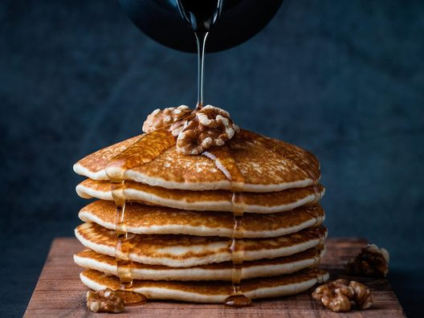
Classic Fluffy American Pancakes310 kcal · 9 g protein27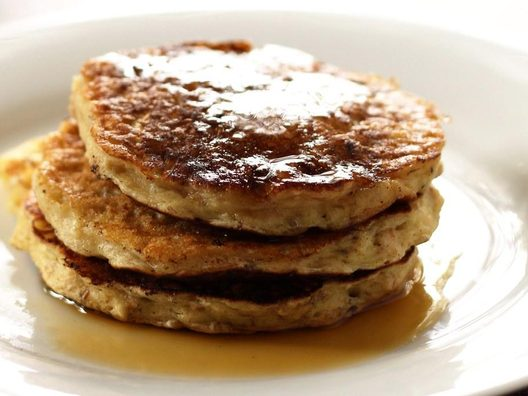
Oat Pancakes435 kcal · 17 g protein28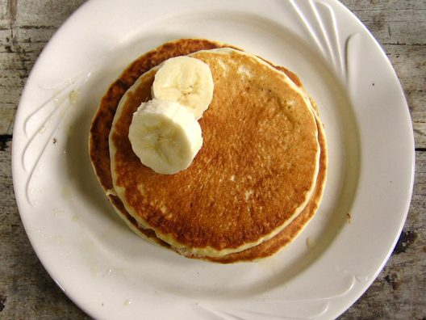
Cottage Cheese & Banana Pancakes310 kcal · 19 g protein29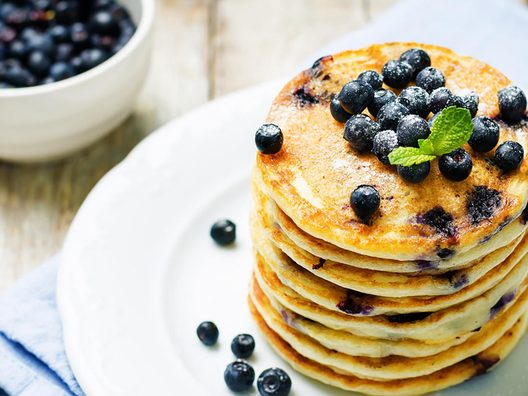
Fluffy Buttermilk Blueberry Pancakes350 kcal · 13 g protein30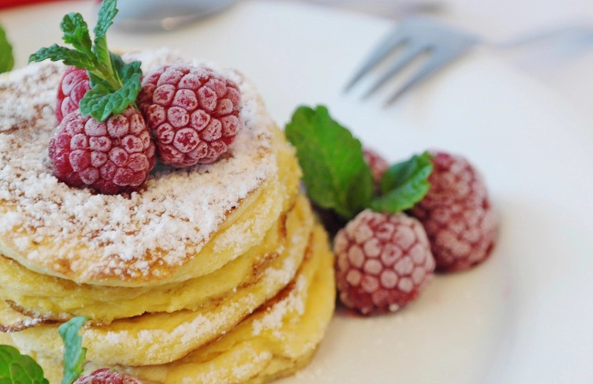
Fluffy Greek Yogurt Pancakes460 kcal · 22 g protein31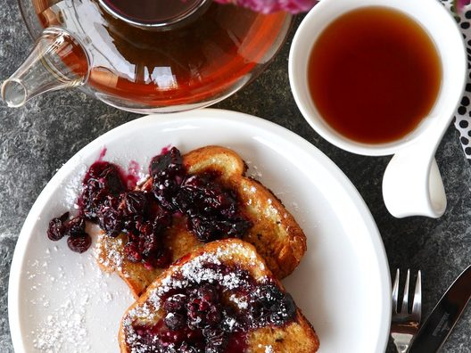
French Toast with Greek Yogurt & Berries370 kcal · 23 g protein32
Pancakes & French toastClassic Fluffy American Pancakes
Makes 8–10 pancakes; serves 3–4 · values per serving (2–3 pancakes)
310kcal
9 gprotein
47 gcarbs
9 gfat
Ingredients
- 200 g plain flour
- 2 tbsp caster sugar
- 2 tsp baking powder
- ¼ tsp bicarbonate of soda
- Pinch of salt
- 1 egg
- 250 ml buttermilk
- 30 g melted butter, cooled
- ½ tsp vanilla extract
- Butter or oil, for cooking
- Maple syrup and fresh berries, to serve
Method
- Whisk together the flour, sugar, baking powder, bicarbonate of soda and salt.
- In another bowl, whisk the egg, buttermilk, melted butter and vanilla.
- Pour the wet ingredients into the dry ingredients and fold gently until just combined. A few small lumps are fine.
- Rest the batter for 5 minutes while heating a lightly greased pan over medium-low heat.
- Add small ladles of batter. Cook until bubbles appear on the surface and the edges look set, then flip and cook until golden and cooked through.
- Serve warm with maple syrup and berries.
Calculated for 4 servings. Not counted in the macros: maple syrup and fresh berries, to serve.
Pancakes & French toastOat Pancakes
Serves 2 · values per serving
435kcal
17 gprotein
54 gcarbs
17 gfat
Ingredients
- 130 g oat flour
- 1½ tsp baking powder
- 2 eggs
- 120 ml milk
- 1 tbsp honey
- 1 tbsp melted coconut oil or olive oil
- 1 tsp vanilla
- ½ tsp cinnamon
Method
- Mix the oat flour, baking powder and cinnamon.
- Whisk the eggs, milk, honey, oil and vanilla.
- Combine wet and dry ingredients without overmixing.
- Cook in a lightly oiled pan until golden on both sides.
- Serve with fruit and yogurt.
Cottage Cheese & Banana Pancakes
Makes 8 small pancakes; serves 2 · values per serving (4 pancakes)
310kcal
19 gprotein
35 gcarbs
10 gfat
Ingredients
- 150 g cottage cheese
- 2 eggs
- 1 ripe banana
- 60 g rolled oats or oat flour
- ½ tsp baking powder
- ½ tsp cinnamon
- A little oil for the pan
Method
- Blend the cottage cheese, eggs and banana until smooth.
- Add the oats, baking powder and cinnamon; pulse until combined.
- Rest the batter for 5 minutes.
- Cook small pancakes in a lightly oiled non-stick pan over medium-low heat, 2–3 minutes per side.
- Serve with berries or yogurt.
Vivify tipKeep the pancakes small so they are easier to turn.
Pancakes & French toastFluffy Buttermilk Blueberry Pancakes
Makes 10–12; serves 4 · values per serving (3 pancakes)
350kcal
13 gprotein
58 gcarbs
7 gfat
Ingredients
- 250 g plain flour
- 2 tsp baking powder
- ½ tsp bicarbonate of soda
- Pinch of salt
- 2 eggs
- 400 ml buttermilk
- 1 tsp vanilla extract
- 150 g blueberries
- 1 tbsp olive oil
Method
- Mix the flour, baking powder, bicarbonate of soda and salt in a bowl.
- Whisk the eggs, buttermilk, vanilla and oil in a jug.
- Fold wet ingredients into dry until just combined; fold in blueberries.
- Cook portions in a lightly oiled pan over medium-low heat until bubbles form, then flip and cook through.
- Serve with fruit and Greek yogurt.
Fluffy Greek Yogurt Pancakes
Makes 8 small pancakes; serves 2 · values per serving (4 pancakes)
460kcal
22 gprotein
69 gcarbs
10 gfat
Ingredients
- 150 g plain flour
- 150 g thick Greek yogurt
- 2 eggs
- 80 ml milk
- 1 tbsp honey or maple syrup
- 1½ tsp baking powder
- ½ tsp vanilla extract
- A little oil or butter for the pan
- Berries and extra Greek yogurt, to serve
Method
- Whisk the Greek yogurt, eggs, milk, honey and vanilla until smooth.
- In a separate bowl, mix the flour and baking powder.
- Fold the wet ingredients into the dry ingredients until just combined. Do not overmix; the batter will be thick.
- Heat a lightly greased non-stick pan over medium-low heat. Spoon in the batter to make small pancakes.
- Cook for 2–3 minutes until bubbles appear and the edges begin to set. Flip and cook for another 1–2 minutes.
- Serve with berries and a spoonful of Greek yogurt.
Vivify tipSoft, simple pancakes made with everyday ingredients.
Not counted in the macros: berries and extra Greek yogurt, to serve.
Pancakes & French toastFrench Toast with Greek Yogurt & Berries
Serves 2 · values per serving
370kcal
23 gprotein
43 gcarbs
12 gfat
Ingredients
- 4 slices wholegrain or sourdough bread
- 2 eggs
- 80 ml milk
- ½ tsp cinnamon
- ½ tsp vanilla
- 1 tsp butter or oil
- 150 g Greek yogurt
- 100 g berries
Method
- Whisk the eggs, milk, cinnamon and vanilla in a shallow dish.
- Dip each slice of bread into the mixture, allowing it to absorb briefly.
- Cook in a lightly buttered pan for 2–3 minutes per side until golden and cooked through.
- Serve with Greek yogurt and berries.
06
Chapter 06Toasts, breads & spreads
Simple staples and batch-friendly bakes
Bread-based breakfasts are quick to assemble and easy to adapt. Add eggs, cottage cheese, yogurt or fish when you want a more protein-rich option.
In this chapter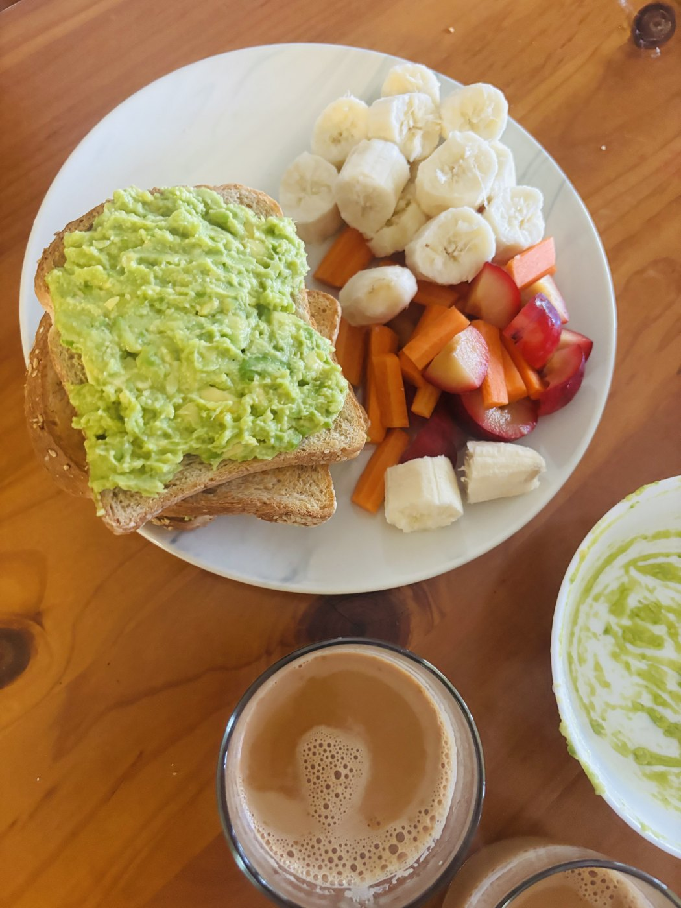
Cottage Cheese & Avocado Toast375 kcal · 20 g protein34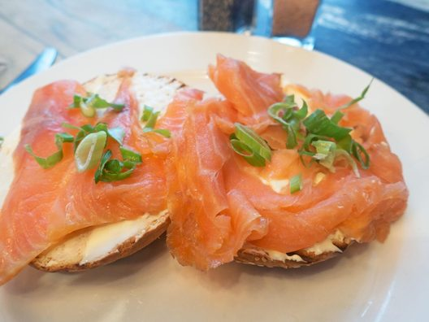
Cottage Cheese & Smoked Salmon Toast400 kcal · 38 g protein35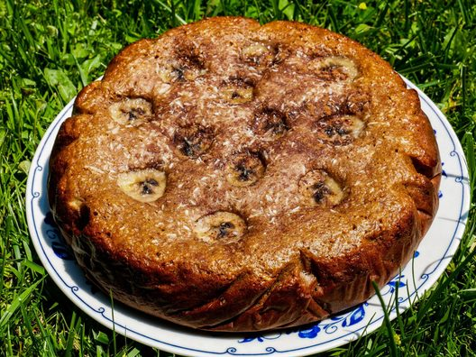
Banana Bread225 kcal · 5 g protein36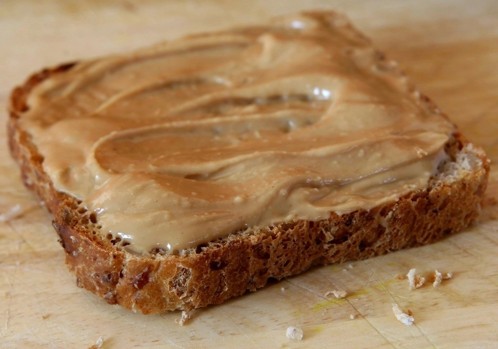
Peanut Butter & Banana Toast400 kcal · 13 g protein37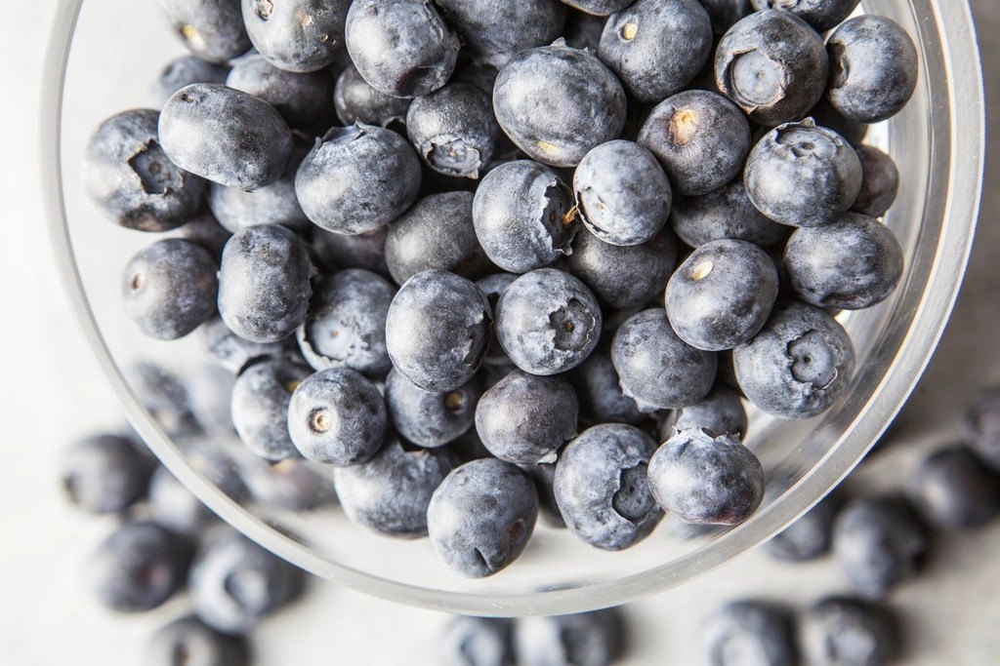
Ricotta & Blueberry Jam Toast420 kcal · 18 g protein38
Toasts, breads & spreadsCottage Cheese & Avocado Toast
Serves 1 · values per serving
375kcal
20 gprotein
43 gcarbs
14 gfat
Ingredients
- 2 slices wholegrain toast
- 100 g cottage cheese
- ½ avocado
- Lemon juice
- Black pepper
- Cherry tomatoes or radish, optional
Method
- Toast the bread.
- Mash the avocado with lemon juice and black pepper.
- Spread cottage cheese over the toast and add the avocado.
- Finish with tomatoes or sliced radish.
Not counted in the macros: cherry tomatoes or radish, optional.
Toasts, breads & spreadsCottage Cheese & Smoked Salmon Toast
Serves 1 · values per serving
400kcal
38 gprotein
37 gcarbs
11 gfat
Ingredients
- 2 slices wholegrain bread
- 100 g cottage cheese
- 75–100 g smoked salmon
- Spring onion or dill
- Lemon and black pepper
Method
- Toast the bread if preferred.
- Spread cottage cheese over each slice.
- Add the smoked salmon and finish with herbs, lemon and black pepper.
Ranges are calculated at the midpoint.
Toasts, breads & spreadsBanana Bread
Makes 1 loaf; 10 slices · values per slice
225kcal
5 gprotein
30 gcarbs
9 gfat
Ingredients
- 75 g melted coconut oil or neutral oil
- 130 g maple syrup
- 2 eggs
- 225 g mashed ripe banana
- 60 ml milk
- 1 tsp vanilla extract
- 1 tsp bicarbonate of soda
- ½ tsp salt
- 1 tsp cinnamon
- 230 g spelt flour
- 60 g chopped walnuts, optional
Method
- Heat the oven to 180°C and line a loaf tin.
- Whisk the oil and maple syrup; beat in the eggs, mashed banana, milk and vanilla.
- Stir in bicarbonate of soda, salt and cinnamon.
- Fold in the spelt flour just until combined; add walnuts if using.
- Pour into the tin and bake for 45–55 minutes, until a skewer comes out clean.
- Cool before slicing.
Vivify tipServe with Greek yogurt or cottage cheese if you want to add protein to the meal.
Not counted in the macros: 60 g chopped walnuts, optional.
Toasts, breads & spreadsPeanut Butter & Banana Toast
Serves 1 · values per serving
400kcal
13 gprotein
62 gcarbs
11 gfat
Ingredients
- 2 slices wholegrain toast
- 1 tbsp peanut butter
- 1 banana, sliced
- Cinnamon, optional
- 150 g Greek yogurt on the side, optional
Method
- Toast the bread.
- Spread with peanut butter and top with banana.
- Add cinnamon and serve with yogurt if desired.
Not counted in the macros: cinnamon, optional; 150 g Greek yogurt on the side, optional.
Toasts, breads & spreadsRicotta & Blueberry Jam Toast
Serves 1 · values per serving
420kcal
18 gprotein
61 gcarbs
12 gfat
Ingredients
- 2 slices sourdough or wholegrain bread
- 80 g ricotta
- 100 g blueberries, fresh or frozen
- 1 tsp honey or maple syrup
- ½ tsp lemon juice
- Pinch of lemon zest, optional
- Pinch of cinnamon, optional
Method
- Add the blueberries and honey or maple syrup to a small saucepan.
- Cook over a low-medium heat for 4–6 minutes, stirring and lightly crushing the berries until they become jammy. Add a splash of water if needed.
- Stir in the lemon juice and leave to cool slightly.
- Toast the bread and spread with ricotta.
- Spoon the warm blueberry mixture over the ricotta and finish with lemon zest or cinnamon, if using.
Vivify tipA simple sweet toast with creamy ricotta and homemade fruit topping.
Not counted in the macros: pinch of lemon zest, optional; pinch of cinnamon, optional.
07
Chapter 07Eggs & savoury breakfasts
A savoury start with flexible portions
Eggs, tofu, fish and dairy foods make useful savoury breakfast ingredients. Add bread, potatoes or other carbohydrate foods to match the session ahead.
In this chapter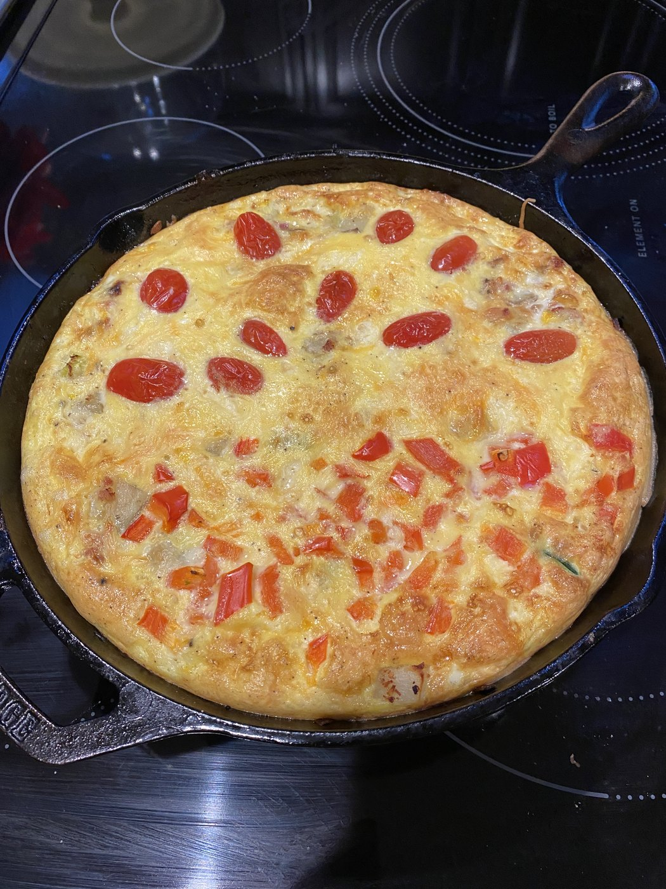
Spinach & Feta Egg Muffins220 kcal · 17 g protein40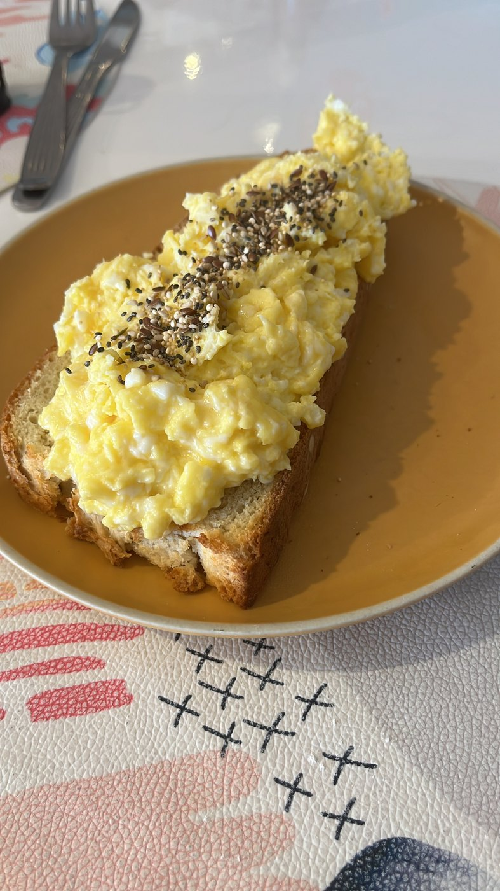
Tofu Scramble on Toast485 kcal · 33 g protein41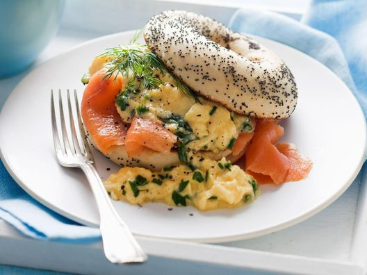
Smoked Salmon & Scrambled Egg Toast435 kcal · 32 g protein42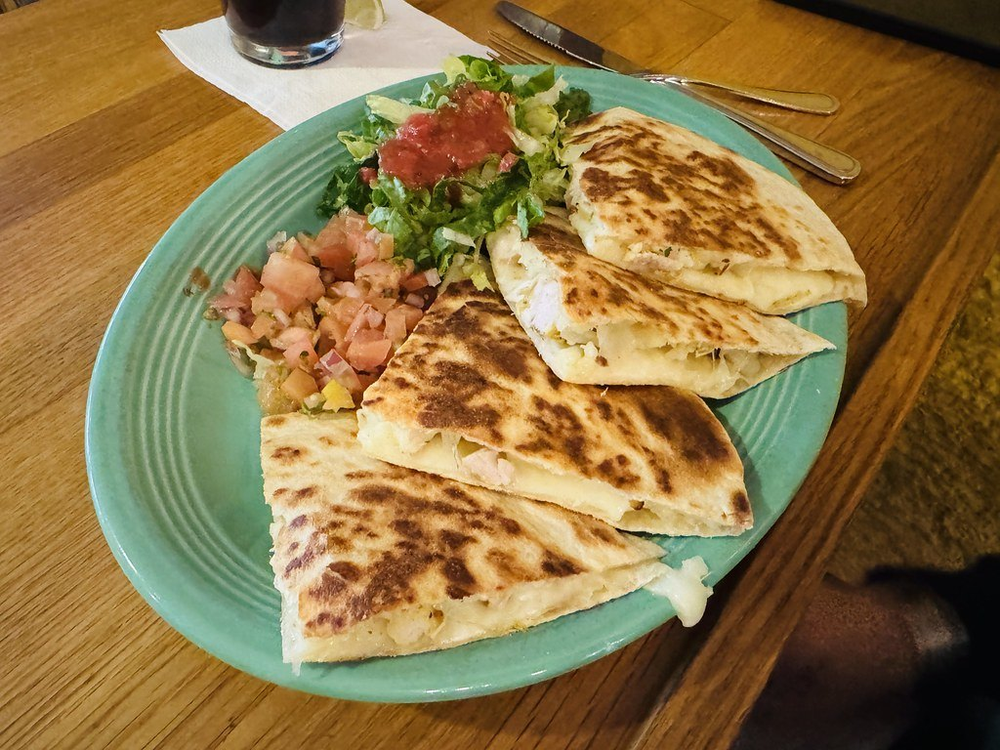
Breakfast Quesadilla415 kcal · 23 g protein43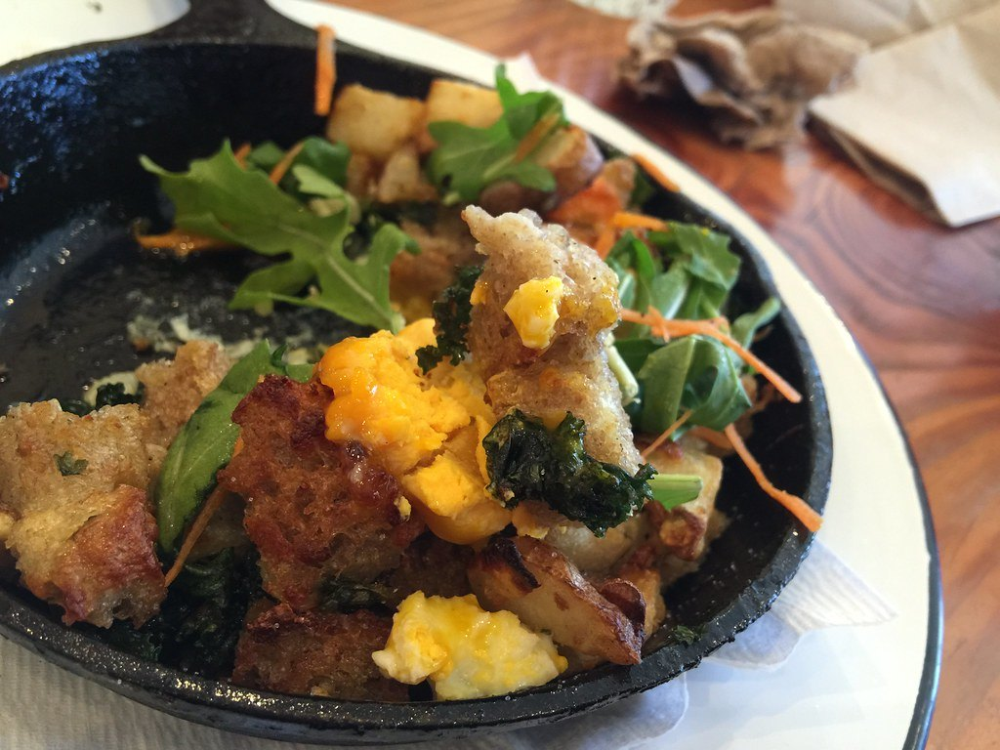
Sweet Potato & Egg Hash355 kcal · 16 g protein44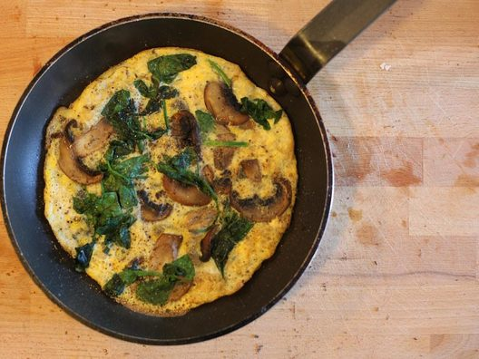
Classic Fluffy Omelette250 kcal · 19 g protein45
Eggs & savoury breakfastsSpinach & Feta Egg Muffins
Makes 6; serves 3 · values per serving (2 muffins)
220kcal
17 gprotein
4 gcarbs
16 gfat
Ingredients
- 6 eggs
- 100 g spinach
- 60 g feta
- 80 g cherry tomatoes, quartered
- Black pepper
- Olive oil for greasing
Method
- Heat the oven to 180°C and grease a 6-hole muffin tin.
- Wilt the spinach in a pan, then squeeze out excess liquid and chop.
- Whisk the eggs with pepper; stir in spinach, feta and tomatoes.
- Divide between the muffin holes and bake for 18–22 minutes until set.
- Serve warm or refrigerate for up to 3 days.
Tofu Scramble on Toast
Serves 2 · values per serving
485kcal
33 gprotein
42 gcarbs
21 gfat
Ingredients
- 300 g firm tofu, crumbled
- 1 tbsp olive oil
- 10 g nutritional yeast
- 80 g spinach
- 100 g cherry tomatoes
- ½ tsp turmeric
- ½ tsp smoked paprika
- 4 slices wholegrain toast
- Salt and pepper
Method
- Heat the oil and cook the tomatoes for 2 minutes.
- Add tofu, turmeric, paprika and nutritional yeast; cook for 5 minutes, stirring.
- Stir in spinach until wilted and season to taste.
- Serve on wholegrain toast.
Smoked Salmon & Scrambled Egg Toast
Serves 2 · values per serving
435kcal
32 gprotein
34 gcarbs
19 gfat
Ingredients
- 4 slices wholegrain toast
- 4 eggs
- 2 tbsp milk
- 1 tsp butter
- 100 g smoked salmon
- Chives or dill
- Black pepper
Method
- Whisk the eggs with the milk.
- Melt the butter over a low heat and cook the eggs gently, stirring until softly set.
- Serve over toast with smoked salmon, herbs and black pepper.
Breakfast Quesadilla
Serves 2 · values per serving
415kcal
23 gprotein
35 gcarbs
20 gfat
Ingredients
- 2 wholegrain tortillas
- 3 eggs
- 80 g black beans, drained
- 40 g grated cheddar
- Handful of spinach
- ½ red pepper, diced
- 1 tsp olive oil
- Salsa to serve
Method
- Heat the oil in a pan and soften the pepper.
- Add spinach and black beans; cook until warmed through.
- Scramble the eggs in the pan until just set.
- Divide the filling between the tortillas, add cheese and fold in half.
- Toast in a dry pan for 1–2 minutes per side until crisp and the cheese melts.
- Serve with salsa.
Not counted in the macros: salsa to serve.
Eggs & savoury breakfastsSweet Potato & Egg Hash
Serves 2 · values per serving
355kcal
16 gprotein
36 gcarbs
16 gfat
Ingredients
- 300 g sweet potato, diced
- 1 tbsp olive oil
- 100 g red pepper, diced
- 60 g onion, diced
- 4 eggs
- 1 tsp smoked paprika
- Parsley, salt and pepper
Method
- Boil or microwave the sweet potato for 5 minutes until just tender; drain.
- Heat the oil and cook the onion and pepper for 3 minutes.
- Add sweet potato and paprika; cook for 8–10 minutes until golden.
- Make four wells, add the eggs, cover and cook until the whites are set.
- Finish with parsley and black pepper.
Classic Fluffy Omelette
Serves 1 · values per serving
250kcal
19 gprotein
2 gcarbs
19 gfat
Ingredients
- 3 eggs
- 1 tbsp milk or water
- 1 tsp butter
- Salt and freshly ground black pepper
- Chopped chives or parsley, optional
Method
- Crack the eggs into a bowl. Add the milk or water, a pinch of salt and a little pepper.
- Whisk with a fork until the yolks and whites are fully combined and slightly frothy.
- Melt the butter in a small non-stick frying pan over medium-low heat, tilting to coat the base.
- Pour in the eggs. As the edges begin to set, gently draw them towards the centre with a spatula, tilting the pan so uncooked egg flows into the gaps.
- When the omelette is mostly set but still slightly glossy on top, fold it in half.
- Cook for another 20–30 seconds, then slide onto a plate. Finish with herbs if using.
Vivify tipA simple, versatile egg breakfast that can be served with toast.
Macros calculated with milk. Not counted in the macros: chopped chives or parsley, optional.
08
Chapter 08Smoothies & smoothie bowls
Quick fuel and easy-to-adjust portions
Smoothies can be useful when appetite or time is limited. Blending fruit does not remove its carbohydrate content; pair smoothies with a protein-rich ingredient when they are intended to replace a meal.
In this chapter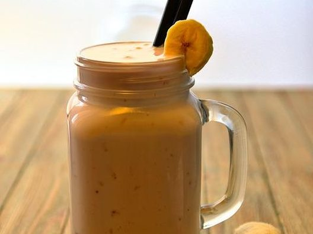
Banoffee Smoothie445 kcal · 29 g protein47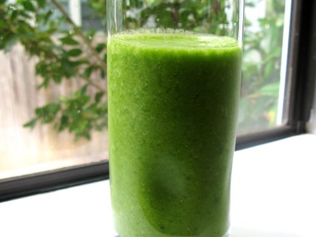
Green Pineapple & Yogurt Smoothie280 kcal · 19 g protein48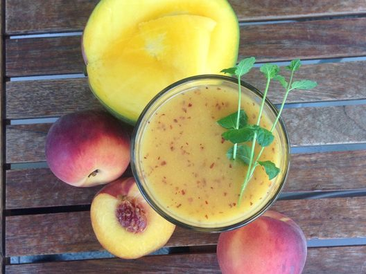
Tropical Yogurt Smoothie390 kcal · 25 g protein49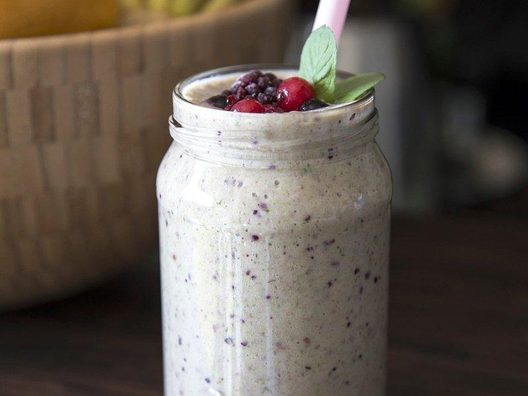
The Athlete’s Banana & Blueberry Smoothie615 kcal · 33 g protein50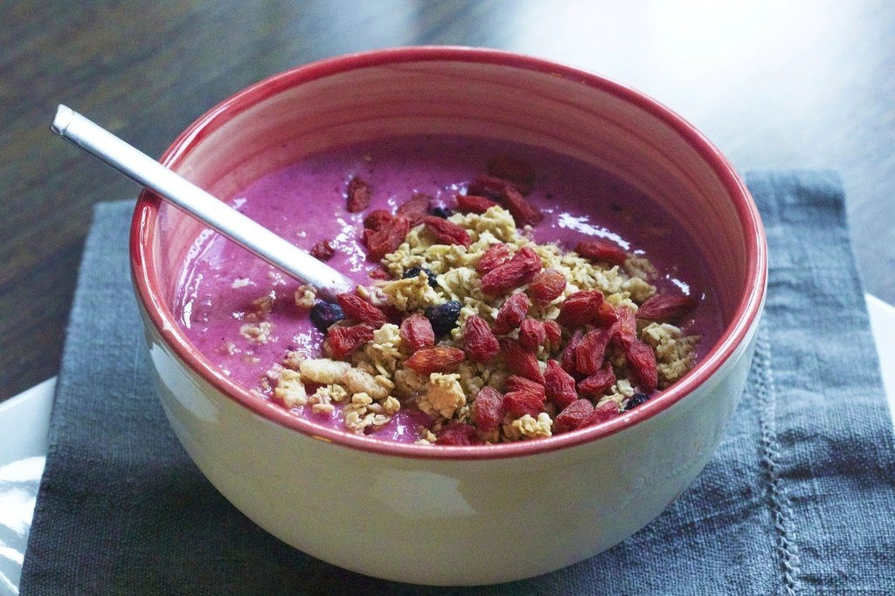
Berry Recovery Smoothie Bowl455 kcal · 25 g protein51
Smoothies & smoothie bowlsBanoffee Smoothie
Serves 1 · values per serving
445kcal
29 gprotein
46 gcarbs
16 gfat
Ingredients
- 1 banana
- 170 g skyr or thick Greek yogurt
- 200 ml milk
- 1 tbsp almond or peanut butter
- ½ tsp cinnamon
- 1 tsp honey, optional
- Ice, optional
Method
- Add all ingredients to a blender.
- Blend until smooth and creamy.
- Add more milk to thin or ice to thicken.
Not counted in the macros: 1 tsp honey, optional; ice, optional.
Smoothies & smoothie bowlsGreen Pineapple & Yogurt Smoothie
Serves 1 · values per serving
280kcal
19 gprotein
38 gcarbs
6 gfat
Ingredients
- 30 g spinach
- 120 g frozen pineapple
- ½ banana
- 170 g skyr or Greek yogurt
- 150–200 ml water or milk
- 1 tsp ground flaxseed
Method
- Add all ingredients to a blender.
- Blend until completely smooth.
- Adjust the liquid to your preferred consistency.
Macros calculated with water.
Smoothies & smoothie bowlsTropical Yogurt Smoothie
Serves 1 · values per serving
390kcal
25 gprotein
43 gcarbs
13 gfat
Ingredients
- 60 g pineapple
- 60 g mango
- 140–170 g Greek yogurt
- 40 g nectarine
- 150 ml milk or water
- 1 tbsp cashews
- 1 tbsp rolled oats
- 1 tsp flaxseed
- Mint, optional
Method
- Place all ingredients in a blender.
- Blend until smooth and creamy.
- Add extra liquid if needed and serve immediately.
Macros calculated with milk and the yogurt range at the midpoint. Not counted in the macros: mint, optional.
Smoothies & smoothie bowlsThe Athlete’s Banana & Blueberry Smoothie
Serves 1 · values per serving
615kcal
33 gprotein
80 gcarbs
18 gfat
Ingredients
- 40 g rolled oats
- 1 banana
- 80 g blueberries
- 170 g Greek yogurt or skyr
- 150 ml milk
- 1 tbsp peanut butter
- ½ tsp cinnamon
Method
- Add all ingredients to a blender.
- Blend until smooth, scraping down the sides if needed.
- Add more milk for a thinner smoothie.
Vivify tipIncrease the oats or add toast alongside when you need more carbohydrate.
Smoothies & smoothie bowlsBerry Recovery Smoothie Bowl
Serves 1 · values per bowl
455kcal
25 gprotein
58 gcarbs
14 gfat
Ingredients
- 150 g frozen mixed berries
- 1 small banana
- 170 g skyr or thick Greek yogurt
- 30–50 ml milk
- 20 g granola
- 10 g pumpkin seeds
Method
- Blend the berries, banana, yogurt and a little milk until thick.
- Spoon into a bowl.
- Top with granola and pumpkin seeds.
A final note on fuelling
There is no single perfect breakfast. The best option is one that you enjoy, tolerate well and can fit around your training, appetite and schedule. On harder or longer training days, increase the carbohydrate portion or add an extra side. On lighter days, choose portions that leave you comfortably satisfied.
Whole foods first does not mean supplements are never useful. It simply means these recipes are designed to work without protein powder, using familiar ingredients that also bring other nutrients, flavour and texture.
Healthy habits to ignite your potential
Photography: Marine Lenehan / Vivify Sports. Additional photos are free-to-use public-domain (CC0) images from the WordPress Photo Directory and Openverse.
© Vivify Sports. For personal use only; please do not share or resell.